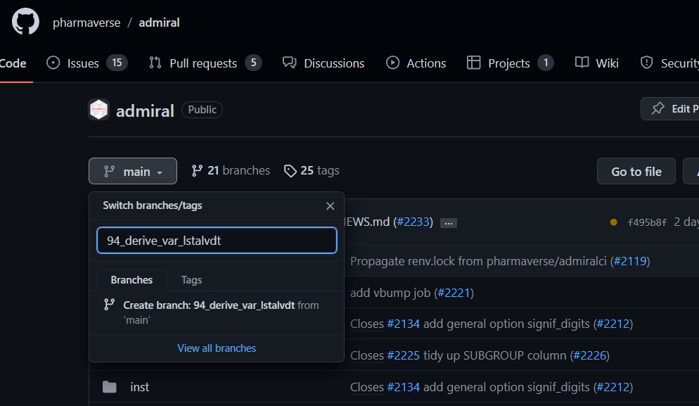
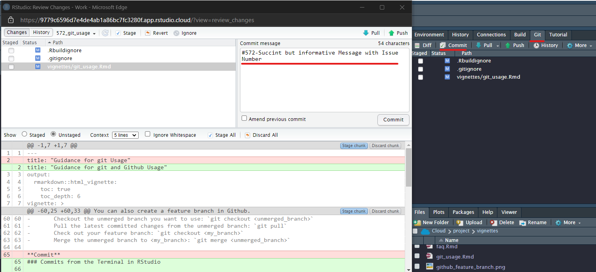
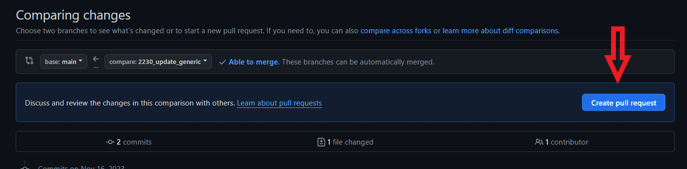
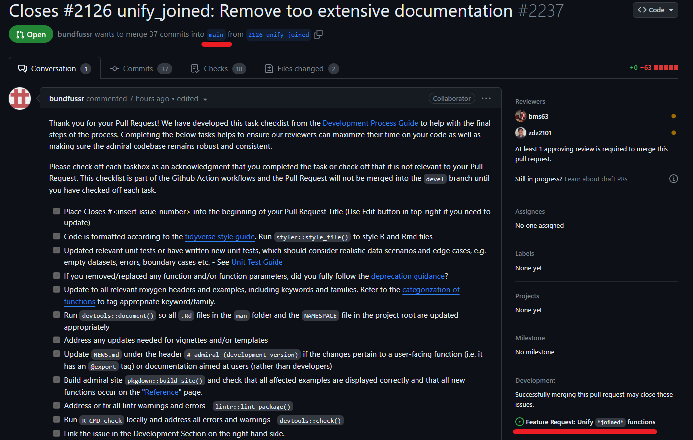
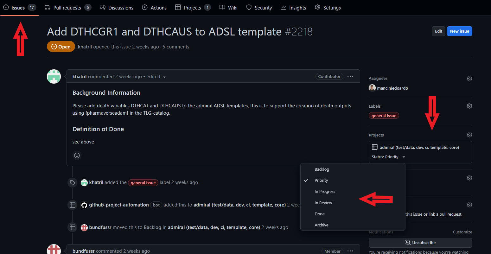
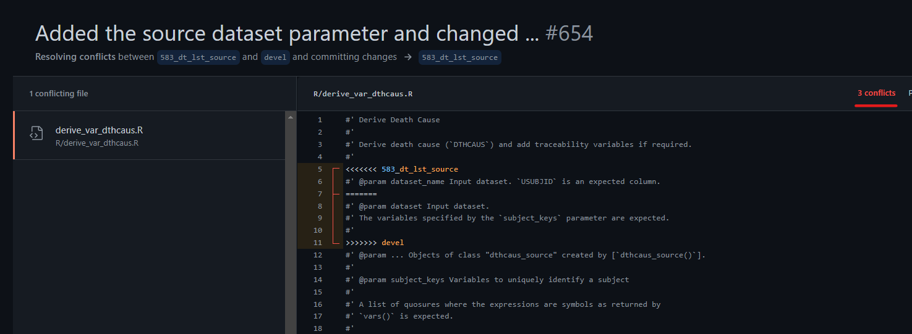

Introduction
This article will give you an overview of how the
admiral project is utilizing the version-control software
git and the website GitHub while working with RStudio. We
will go over the primary branches that house the source code for the
admiral project as well as how we use
Feature branches to address Issues.
Issues can range from bugs to enhancements that have been identified or
requested by developers, users or testers. We also provide the bare
minimum of git commands needed to get up and running.
Please refer to the Resource section for
more in-depth guidance on using git and GitHub.
Branches
The
mainbranch contains the latest development version of the package. You can find the released versions hereThe
gh-pagesbranches contains the code used to render R package websites - you are looking at right now!The
patchbranch is reserved for special hot fixes to address bugs and should rarely be used. More info in Hot Fix ReleaseThe
main,gh-pages,patchbranches are under protection. If you try and push changes to these branches you will get an error unless you are an administrator.Feature branches are where actual development related to a specific issue happens. Feature branches are merged into
mainonce a pull request is merged. Check out the Pull Request Review Guidance for more guidance on merging intomain.
Working with Feature Branches
Feature Branches are where most developers will work when addressing Issues.
Implementing an Issue
Each feature branch must be related to an issue. We encourage new developers to only work on one issue at a time.
Naming Branches
The name of the branch must be prefixed with the issue number,
followed by a short but meaningful description. As an example, given an
issue #94 “Program function to derive LSTALVDT”, the branch
name would be 94_derive_var_lstalvdt.
Create a New Feature Branch from the Terminal (from
main)
- Checkout the main branch:
git checkout main
- Pull the latest changes from GitHub:
git pull
- Create a new branch off the main branch and switch to it:
git checkout -b <new_branch_name>
Create a New Feature Branch from GitHub (from
main)
You can also create a feature branch in GitHub.
- Switch to the
mainbranch - Type in your new feature branch name
- Click Create branch:
<your_branch_name>@mainfrommain - Be Sure to Pull down newly created branch into RStudio

Commits from the Terminal in RStudio
To start the commit process, you will need to tell git
to move your changes to the staging area. Use
git add <your_file> to move all changes of
<your_file> in the staging area to wait for the next
commit. You can use git add . to move all files you have
worked on to the staging area. Next you can commit, which takes a
snapshot of your staged changes. When committing, prefix the message
with the issue number and add a meaningful message
git commit –m '#94 last alive date implementation'.
Lastly, you should push your changes up to GitHub using
git push origin <branch name>
Commits from the Git Tab in RStudio
You can also make use of the Git Tab within RStudio to commit your changes. A benefit of using this Tab is being able to see your changes to the file with red and green highlighting. Just like in the terminal, start the message with the issue number and add a meaningful and succinct sentence. Hit the Commit button and then Push up to GitHub.

Commit Message Etiquette
We require developers to insert the issue number into each commit message. Placing the issue number in your commit message allows reviewers to quickly find discussion surrounding your issue. When pushed to GitHub the issue number will be hyperlinked to the issue tracker, a powerful tool for discussion and traceability, which we think is valuable in a highly regulated industry like Pharma.
Below are styles of commit messaging permitted:
Style 1:
feat: #94 skeleton of function developedchore: #94 styler and lintr updatedocs: #94 parameters and details sections compelted
Pull request
We recommend a thorough read through of the articles, Pull Request Review Guidance and the
Programming Strategy for
in-depth discussions on a doing a proper Pull Request.Pull Request
authors will benefit from shorter review times by closely following the
guidance provided in those two articles. Below we discuss some simple
git commands in the terminal and on GitHub for doing a Pull
Request. We recommend doing the Pull Request in GitHub only and not
through the terminal.
Once all changes are committed, push the updated branch to
GitHub:git push -u origin <branch_name>
In GitHub, under Pull requests, the user will either
have a “Compare and pull request” button and/or a “Create Pull Request”.
The first button will be created for you if GitHub detects recent
changes you have made. The branch to merge with must be the
main branch (base = main) and the compare
branch is the new branch to merge - as shown in the below picture.
Please pay close attention to the branch you are
merging into!

The issue must be linked to the pull request in the “Development” field of the Pull Request. In most cases, this will linkage will automatically close the issue and move to the Done column on our project board.

Once you have completed the Pull Request you will see all committed changes are then available for the reviewer. A reviewer must be specified in the Pull Request. It is recommended to write a brief summary to your reviewers so they can quickly come up to speed on your Pull Request. Images of your updates are nice too, which are easy to do in GitHub! Use any Screen Capture software and Copy and Paste into your summary.
Reviewing/Closing an Issue
- At least one reviewer must approve the Pull Request. Please review the Pull Request Review Guidance, which provides in depth guidance on doing a proper Pull Request.
- The reviewer must ensure that the function follows the programming strategy recommendations.
- Any comment/question/discussion must be addressed and documented in GitHub before the Pull Request is merged
Once the review is completed, the reviewer will merge the Pull Request and the feature branch will automatically be deleted.
After merging the Pull Request please check that corresponding has been moved to the done column on the Project Board. Also, please make sure that the issue has closed.

Solving Merge Conflicts in the Terminal on RStudio
Merge conflict is a situation where git cannot decide
which changes to apply since there were multiple updates in the same
part of a file. This typically happens when multiple people update the
same part of code. Those conflicts always need to be handled manually
(as some further code updates may be required):
git checkout main
git pull
git checkout <feature_branch>
git merge mainThis provides a list of all files with conflicts In the file with
conflicts the conflicting sections are marked with
<<<<<<<, =======, and
>>>>>>>. The code between these
markers must be updated and the markers be removed. Source files need to
be updated manually. Generated files like NAMESPACE or the generated
documentation files should not be updated manually but recreated after
the source files were updated.
To make the changes available call:
git add <file with conflict>
git commit -m "<insert_message>"
git pushSolving Merge Conflicts in GitHub
For simple merge conflicts, developers can make use of the GitHub
interface to solve them. GitHub will show the number of conflicts
between the two branches. In the below image, GitHub has found 3
conflicts, but we only display the first one. Just like in the terminal,
GitHub will make use of the <<<<<<<,
=======, and >>>>>>> to
highlight the conflicting sections. You will need to make the decision
on whether to keep the code from the base or the feature branch. Once
you have decided, go into the code and remove the section you no longer
wish to keep. Be sure to remove the
<<<<<<<, =======, and
>>>>>>> as well! Once you work through
the conflicts you will mark as Resolved and Commit your
changes. It is recommended to pull your branch back down to
RStudio to make sure no untoward effects have happen to your branch.

Useful git Commands
- merging:
git merge <my_branch>- merge my_branch into current branch
- The stashing commands are useful when one wants to go back to clean directory
-
git stash- stash (store) current changes and restore a clean directory
-
git stash pop- put back (restore) stashed changes
-
git revertis also helpful but why?
Using code from unmerged branches
- Checkout the unmerged branch you want to use:
git checkout <unmerged_branch>
- Pull the latest committed changes from the unmerged branch:
git pull
- Check out your feature branch:
git checkout <my_branch>
- Merge the unmerged branch to
: git merge <unmerged_branch>